A projekt célja, hogy megismerjük a Raspberry-n futó operációs rendszereket, ismertessük ezek előnyeit és hátrányait, az elvégzett tesztek alapján.
Előnyök
A Wi-Fi 2,4 GHz-es és 5 GHz-es hálózatok működnek a Bluetooth-al egyetemben, és egyetlen egérkattintással sikerült csatlakoztatni a TaoTronics vezeték nélküli fülhallgatót is. A Full HD (1080p) YouTube videók mind a Mozilla Firefoxban (alapértelmezett), mind pedig a Chromium webböngészőben (snap-ként telepítve) működnek, és a Full HD (1080p) videólejátszás is hibátlanul működik.Maga a rendszer kinézetre első osztályú, rendkívül letisztult, átlátható. Az animációk egyszerűek, inkább funkcionálisak. Több háttérrel, személyreszabható- asztallal és tálcával rendelkezik.
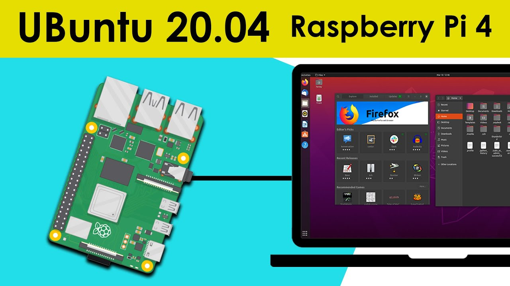{kind=link}
A rendszer telepítése rendkívül egyszerű és gyors. Ha mégis segítségre lenne szükségünk, rengeteg forrás áll rendelkezésünkre.
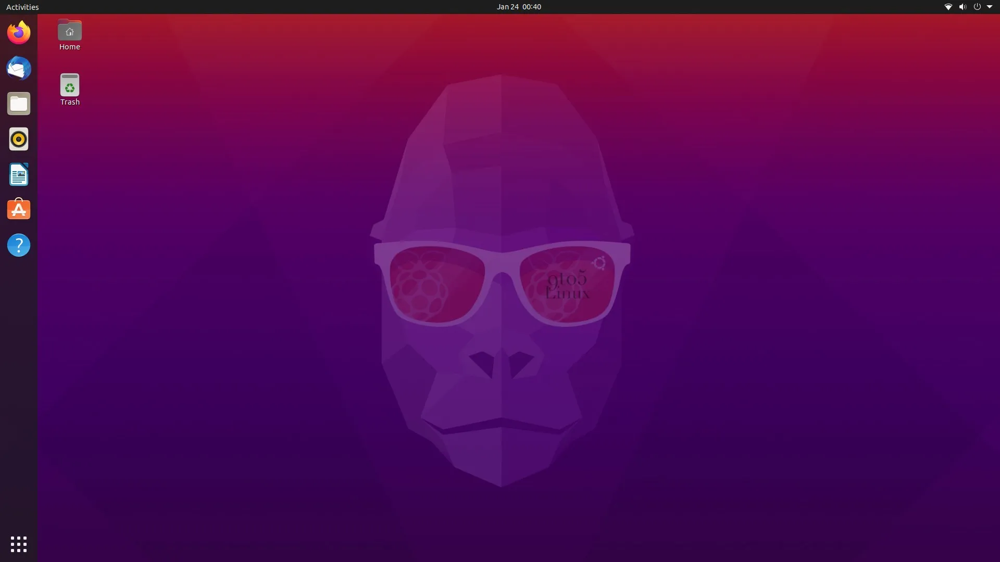{kind=link}
A tálca helye változtatható, ami sokaknak fontos lehet.
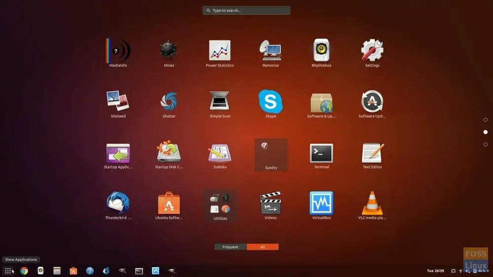{kind=link}
Ami azonban még fontosabb, hogy a rendszer rengeteg nyelvcsomaggal (többek között magyarral is) rendelkezik.
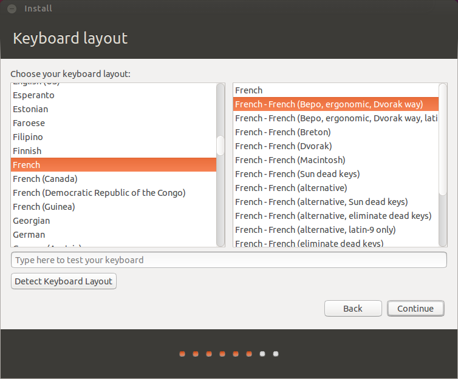{kind=link}
Mindezek jól futnak a Raspberry-n, de lássuk be nem is túl erőforrás igényes dolgok.
Előnyök
Felhasználóbarát felület: Az Ubuntu MATE felhasználóbarát felülete lehetővé teszi, hogy könnyen navigálj a rendszerben, és használja a különböző alkalmazásokat és eszközöket. Stabil: Az Ubuntu MATE stabil és megbízható operációs rendszer, amely megbízhatóan fut a Raspberry Pi-n, és minimális karbantartást igényel. Támogatás: Az Ubuntu MATE-t aktívan fejlesztik, és rendszeresen frissítik a biztonsági frissítéseket és a hibajavításokat. Az Ubuntu MATE-hoz is van közösségi támogatás, amely segíthet az esetlegesen felmerülő problémák megoldásában. Nagy alkalmazáskínálat: Az Ubuntu MATE-hez elérhető nagy alkalmazáskínálat könnyen telepíthető a rendszerre a felhasználók számára, amelyek különböző célokra használhatók, például a webböngészés, a szövegszerkesztés, a multimédiás lejátszás és még sok más.A rendszer könnyedebb kezelést nyújt a felhasználó számára, az asztal letisztultabb könnyebben megtalálhatóak a funkciók. Az animációk szépek, igényesek és gyorsak. A rendszer sokkal testreszabhatóbb, mint az Ubuntu.
Ezen felül mind a rendszer mind a billentyűzet kiosztás állítható magyar nyelvűre.
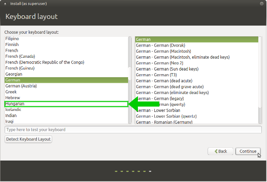{kind=link}
Az asztal témáit rengetegféle képpen testre lehet szabni: témákkal, hátterekkel, betűtípusokkal. Mindez nem lenne kiemelendő, azonban a beépített témák száma figyelemre méltó.
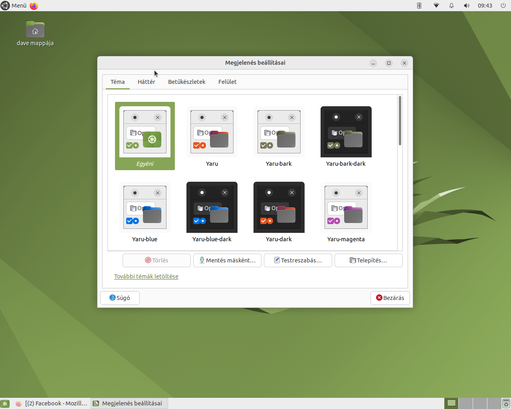{kind=link}
Az Ubuntu Mate több előre definiált háttérrel rendelkezik.
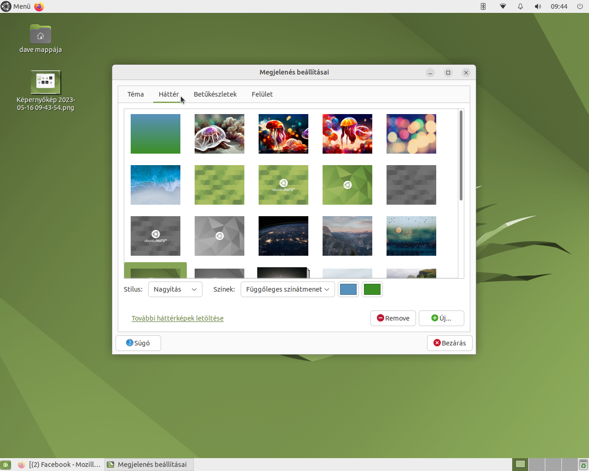{kind=link}
Akárcsak a háttérből, betűkészletből sincs hiány.
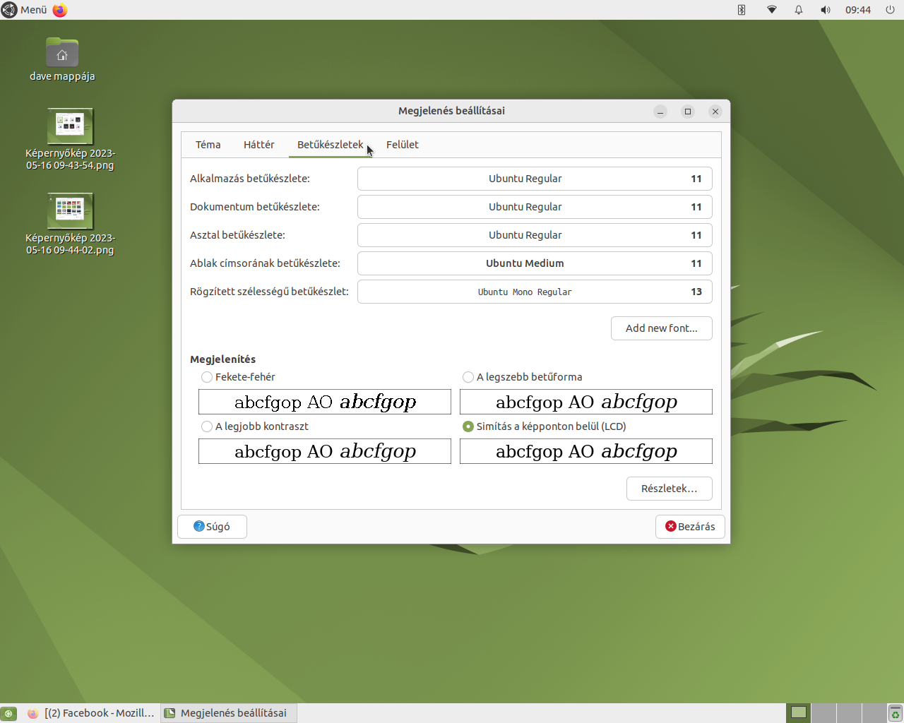{kind=link}
Mindezek kifogástalanul működő elemek, melyeket a Raspberry könnyedén kezel, ámbár akárcsak az Ubuntu esetében ezek nem túl hardware igényes funkciók.
Előnyök
Gyors és hatékony: A Risc OS Pi rendkívül könnyű és optimalizált rendszer, ami azt eredményezi, hogy a Raspberry Pi platformon rendkívül gyorsan és hatékonyan működik. A rendszer kis erőforrásigénnyel rendelkezik, így akár régebbi Raspberry Pi modellek esetén is kiválóan használható.
Risc OS elony
Hátrányok
Természetesen a 4K YouTube vagy helyi videólejátszás nem elérhető, de ez hardverkorlátozásnak tekinthető. A YouTube-on a Quad HD (1440p) és 4K (2160p) minőségű lehetőségek is megjelennek mind a Firefoxban, mind a Chromium-ban, de a 1440p-s minőség lassú, a 2160p-s pedig egyáltalán nem játszódik le. Helyi 4K videók nem játszódnak le a VLC-ben vagy az MPV-ben sem.Tapasztalataink alapján, a Raspberry küszködve futattja ezt a rendszert és ennek eredményeként rendkívül lassú.
Ez a lassúság munkára alkalmatlanná teszi ezt a hardware és software kombinációt.
A "top" parancs lefutattása utáni eredmények alább láthatóak:
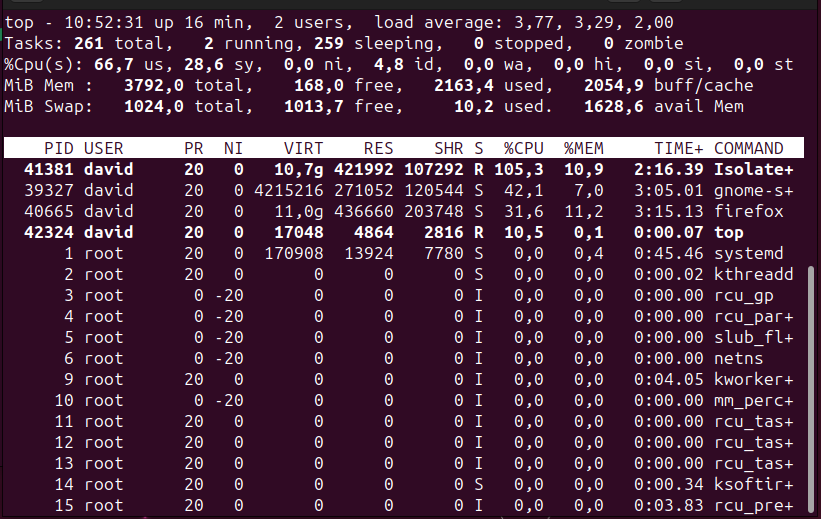
{kind=link}
A "free -m" parancs lefutattása utáni eredmények a memória használattal kapcsolatban az alábbiak:
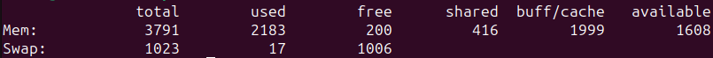{kind=link}
Amint látható, mind a processzor és a memória kihasználtság is magas, bármilyen software futtatása nélkül is. Valamilyen software használatakor ezek az adatok romlanak, a gép még jobban lelassul, szinte használhatatlanná válik. Ugyanakkor kifagyást nem tapasztaltunk, de komolyabb tesztek vagy megerőltetések esetén előfordulhat.
Utolsó megjegyzésként, természetesen az 5G nem működik, de ez még nem is elvárás.
Hátrányok
Teljesítmény: Az Ubuntu MATE használata némi teljesítményt igényel a Raspberry Pi-től, így a lassabb hardverrel rendelkező modellek esetében a rendszer lehet, hogy lassabban fog működni. Méret: Az Ubuntu MATE nagyobb helyet foglal a Raspberry Pi-n, mint a más operációs rendszerek, így nagyobb SD-kártyát kell használni az operációs rendszer telepítéséhez. Hardver-támogatás: Az Ubuntu MATE-t a Raspberry Pi néhány modellje nem támogatja teljes mértékben, és előfordulhat, hogy a hardverrel kapcsolatos problémák merülnek fel az eszközök használata során.Akárcsak az Ubuntu esetében, a hardware nem elegendő a rendszeren futó alkalmazások zökkenő mentes futtására. A memória kihasználtság hasonló mint az Ubuntu esetében. Mivel az Ubuntu Mate több helyet foglal mint más rendszerek, a kis háttértár nem túl ideális.
Ebből adódóan ez a rendszer sem a legalkalmasabb munkára.
A "top" parancs lefutattása utáni eredmények alább láthatóak:
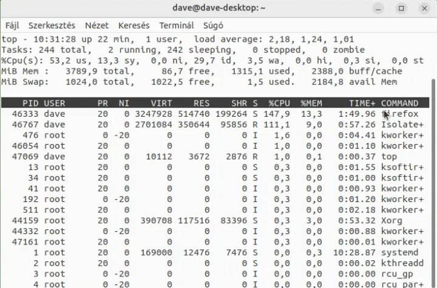{kind=link}
A "free -m" parancs lefutattása utáni eredmények a memória használattal kapcsolatban az alábbiak:
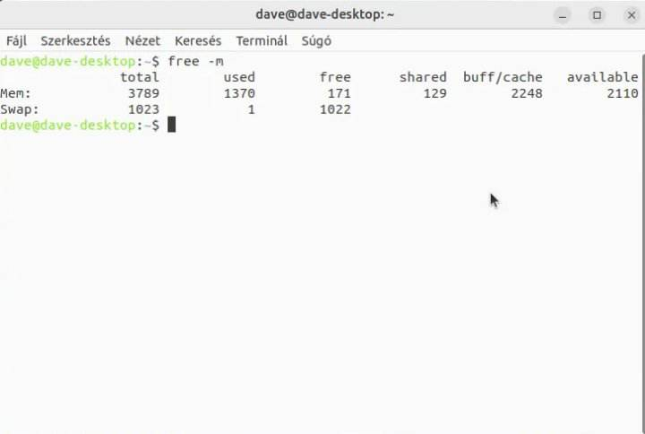{kind=link}
Mint látható a memória kihasználtság nem túl kedvező és valamilyen alkalmazás futtatása esetén ez tovább romlik. Ezek mellett ott van még az igen csak limitált háttértára a Raspberry-nek, melynek jelentős részét maga az operációs rendszer teszi ki.
Hátrányok
Korlátozott kompatibilitás: nem kompatibilis a legtöbb hagyományos szoftverrel és alkalmazással, amelyeket más operációs rendszerekre kifejlesztettek. Ez korlátozza a felhasználók lehetőségeit, különösen olyan specifikus alkalmazások és szoftverek használatakor, amelyek csak más operációs rendszerekre érhetők el.
Risc OS hátrányok